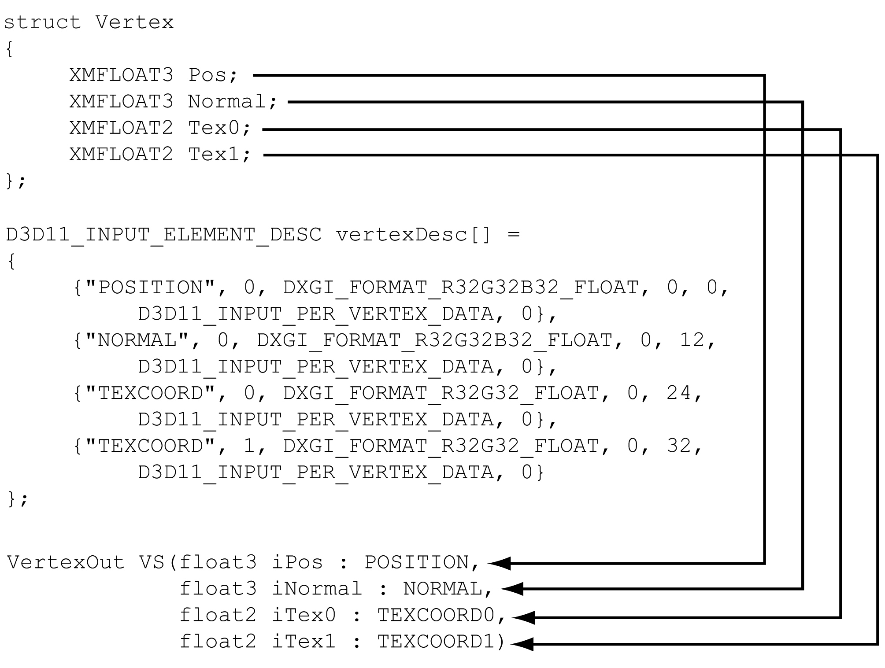
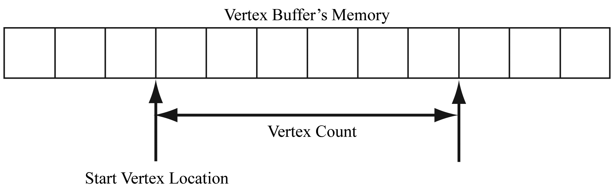
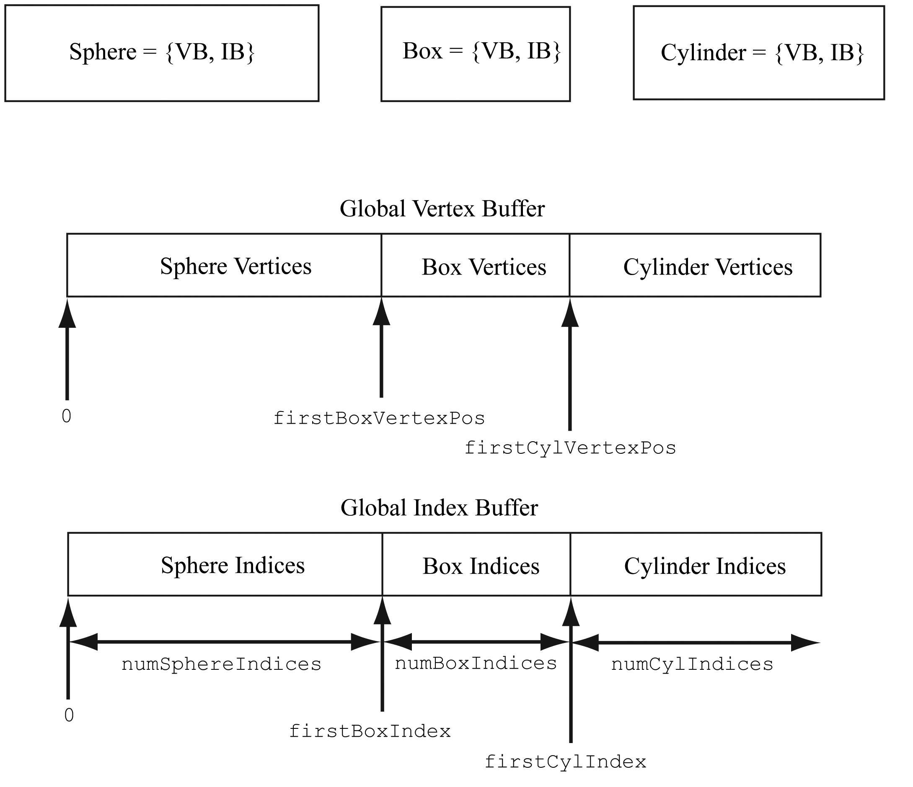
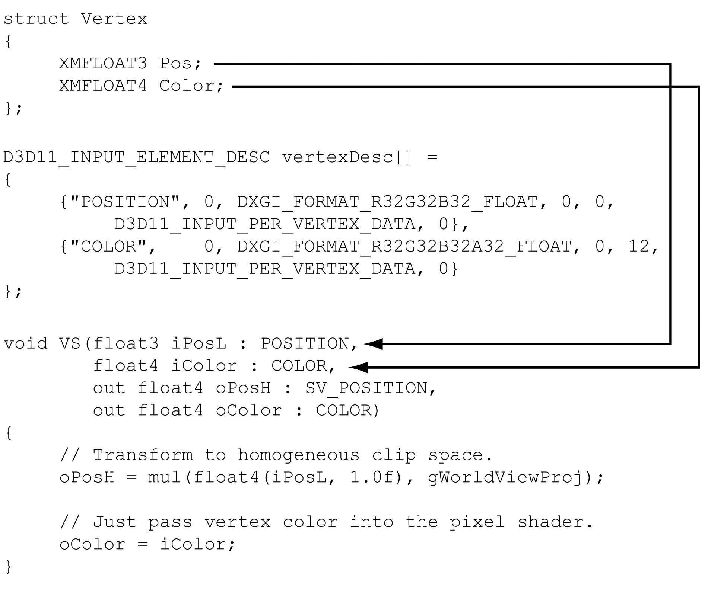
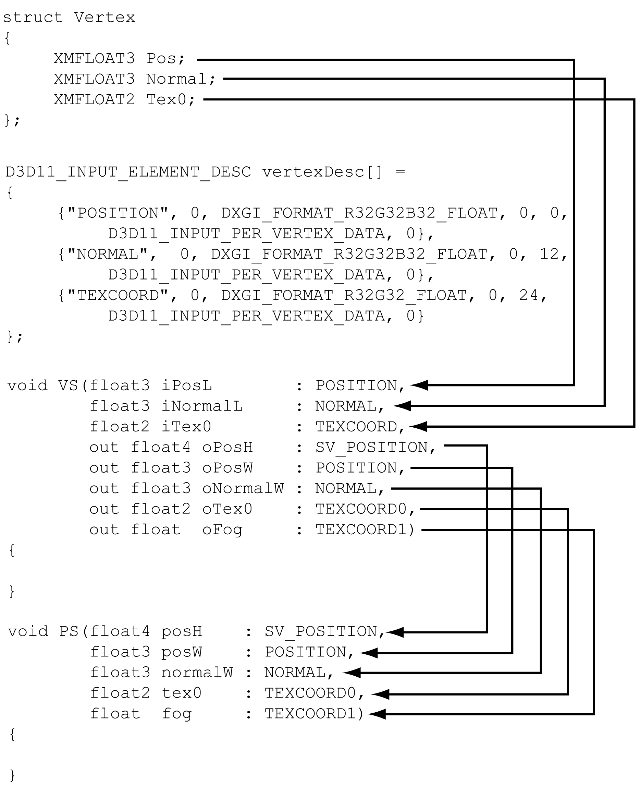
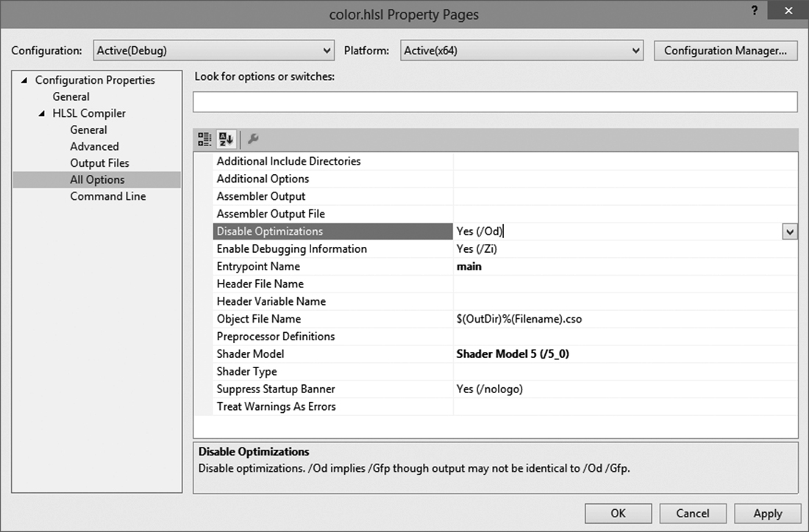
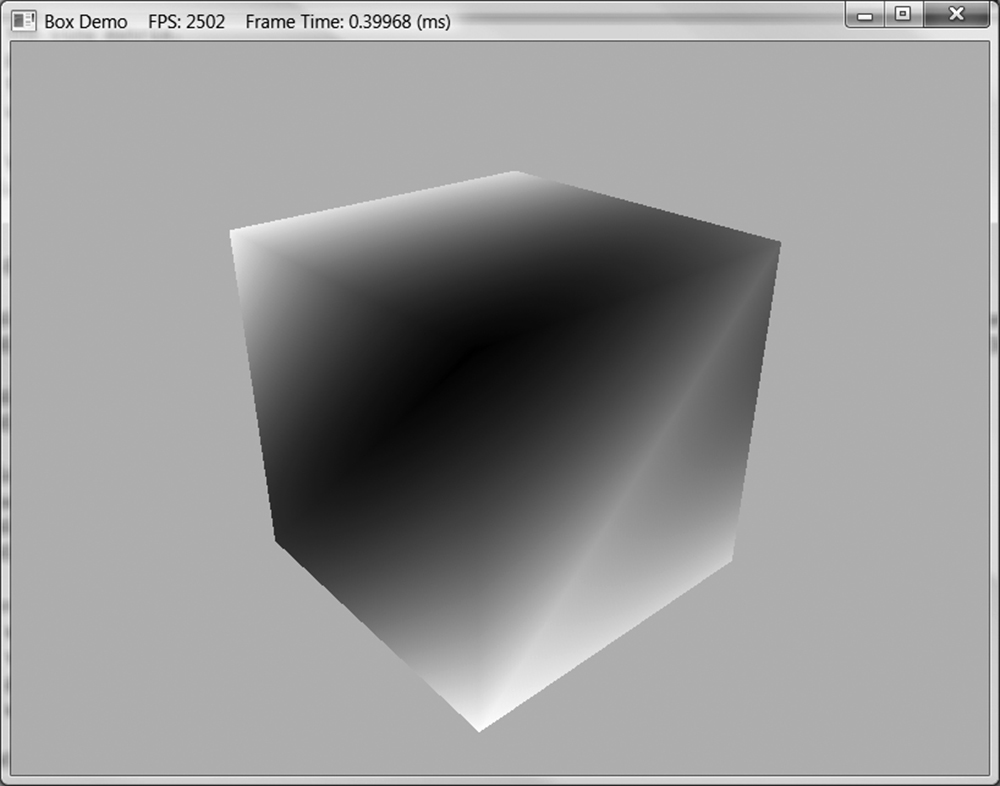
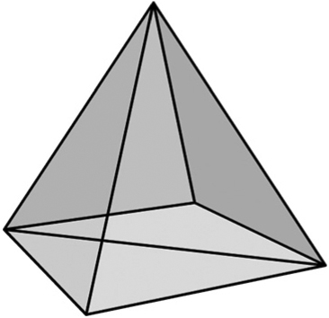

本章学习目标（Objectives）
- 定义顶点结构、输入布局（Input Layout），创建顶点缓冲与索引缓冲；
- 编写并编译顶点/像素着色器，绑定常量缓冲；
- 配置光栅器状态与管线状态对象（PSO）；
- 跑通第一个真正的 DX12 绘制程序：Box Demo。
上一章是"理论管线"，这一章把它落到代码。读完你会亲手画出第一个旋转的立方体——DX12 版的 "Hello, World"。
6.1 顶点与输入布局（Vertices and Input Layouts）
顶点不只是位置：还带颜色、法线、UV 等。示例中的顶点结构：
struct Vertex { XMFLOAT3 Pos; // 位置 XMFLOAT4 Color; // 颜色 };
告诉 GPU 怎么解读顶点缓冲的是输入布局描述数组（D3D12_INPUT_ELEMENT_DESC）：每个元素给出语义名（POSITION / COLOR）、格式（DXGI_FORMAT_R32G32B32_FLOAT 等）和对齐偏移（用 offsetof 计算）。
6.2 顶点缓冲（Vertex Buffers）
顶点数据放 GPU 内存（ID3D12Resource）。创建流程：先建默认堆上传用的缓冲，再用上传缓冲（upload buffer）把 CPU 数据拷上去（D3D12_HEAP_TYPE_UPLOAD → Map 拷贝 → Unmap → CopyBufferRegion）。书中封装了 d3dUtil::CreateDefaultBuffer 帮手函数。
绘制时通过 顶点缓冲视图（VBD，D3D12_VERTEX_BUFFER_VIEW）绑定：mCommandList->IASetVertexBuffers，然后 DrawInstanced(vertexCount, instanceCount, startVertex, startInstance)。StartVertexLocation 支持只画缓冲的一部分；多个小缓冲也可以拼接成一个大缓冲统一管理（书中图 6-3）。
6.3 索引与索引缓冲（Indices and Index Buffers）
索引缓冲存 16 位或 32 位整数索引（DXGI_FORMAT_R16_UINT / R32_UINT），通过 IBV（D3D12_INDEX_BUFFER_VIEW）绑定，用 DrawIndexedInstanced(indexCount, ...) 绘制。画立方体：8 个顶点 + 36 个索引（6 面 × 2 三角 × 3 顶点），避免 24 个位置顶点的重复。
6.6 常量缓冲（Constant Buffers）
常量缓冲是 GPU 上的只读数据块，着色器通过 cbuffer 访问，寄存器槽 b0、b1…绑定。C++ 侧对应：
struct ObjectConstants { XMFLOAT4X4 WorldViewProj = MathHelper::Identity4x4(); }; // 常量缓冲大小必须 256 字节对齐（硬件要求）
绘制前把矩阵写入上传缓冲的对应槽位，再通过 CBV 描述符（Constant Buffer View）绑定到根签名参数。书里强调：每帧每物体常量不同，因此按帧分配上传缓冲区域（这一思想第 7 章扩展成 Frame Resources）。
根签名（Root Signature）
根签名是"绘制前必须绑定哪些资源"的约定（参数列表：CBV/SRV/UAV/描述符表等）。PSO 创建时必须带根签名，运行时用 SetGraphicsRootSignature + SetGraphicsRoot32BitConstants / SetGraphicsRootConstantBufferView 等绑定。Box demo 用最简形式：一个根描述符 CBV。
6.7 编译着色器（Compiling Shaders）
两种方式：① 离线编译成 .cso 字节码（推荐发布用）；② 运行时用 D3DCompileFromFile 编译（示例工程用它，且在 VS 里给 .hlsl 文件配置"自定义生成工具"）。注意入口函数名（VS/PS）与着色器模型（ps_5_0 / vs_5_0）。
// 着色器代码（HLSL，Box demo 核心） cbuffer cbPerObject : register(b0) { float4x4 gWorldViewProj; }; void VS(in VertexIn vin, out VertexOut vout) { vout.PosH = mul(gWorldViewProj, float4(vin.PosL, 1.0f)); vout.Color = vin.Color; } float4 PS(in VertexOut pin) : SV_Target { return pin.Color; // 直接输出插值后的顶点色 }
6.8 光栅器状态（Rasterizer State）
CD3D12_RASTERIZER_DESC 配置：填充模式（实体/线框）、剔除模式（CULL_BACK 等）、正/负 winding 朝向、深度偏移等。Demo 里演示了把剔除关掉能看到立方体"内部"。
6.9 管线状态对象（PSO）
DX12 把 VS/PS/输入布局/根签名/光栅器状态/混合状态/图元拓扑等打包成一个不可变对象 ID3D12PipelineState——驱动可一次性完成验证和优化。创建昂贵（ms 级），切换廉价；所以最佳实践是启动时把会用到的 PSO 全建好，运行时只在 SetPipelineState 间切换。
6.11 Box 演示（整章的集大成）
把所有组件串起来的一帧：
- Update：随时间旋转角度，计算世界矩阵，更新常量缓冲（Map 写入 WorldViewProj）；
- Draw：重置命令列表 → 资源屏障（后台缓冲 → 渲染目标）→ 清屏 → 绑根签名/PSO/顶点索引缓冲 → 绑 CBV → DrawIndexedInstanced(36) → 屏障（→ Present 源）→ Close → 提交 → Present。
本章小结
- 顶点结构 + 输入布局告诉 GPU 数据格式；顶点/索引缓冲用默认堆 + 上传缓冲创建。
- 常量缓冲 256 字节对齐，经 CBV + 根签名绑定；根签名 = 资源绑定契约。
- 着色器运行时编译用 D3DCompileFromFile；PSO 打包一切管线状态。
- 每帧流程：Reset 命令列表 → 屏障 → Clear → 绑定 → DrawIndexed → 屏障 → Close → Execute → Present。
🖼️ 原书插图（8 张，点击展开）







